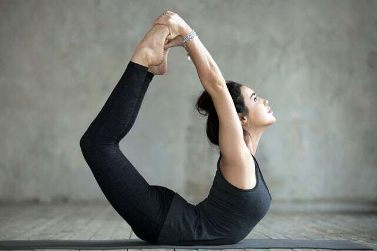
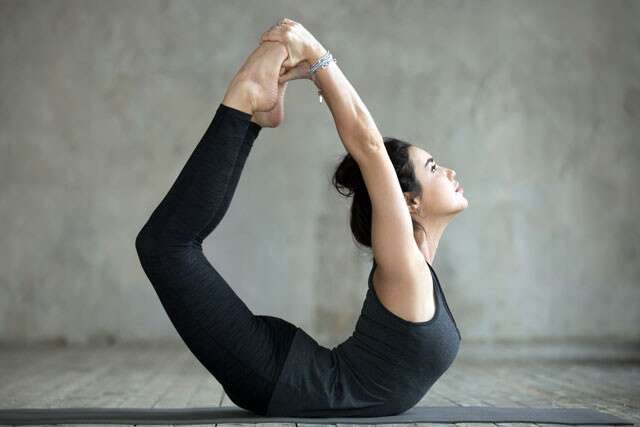

YOGA
Yoga takes you into the present moment. The only place where life exists.
 


Digestive Disorders
Marjaryasana-Bitilasana (Cat-Cow)
Bring your hands beneath your shoulders and knees beneath your hips. Inhale as you drop your belly button toward the earth and lift your heart and hips to the sky into Bitilasana (Cow Pose). Spread across your shoulders and sitting bones. Exhale as you round your upper back toward the sky, dropping your gaze to your navel and pressing your hands and feet into the earth in Marjaryasana (Cat Pose).
Breathing deeply in these poses will massage your organs as you alternately compress and lengthen the intestines, bringing fresh blood to the epithelial cells, which are responsible for healthy gut function.
Supta Matsyendrasana (Supine Twist)
Lie on your back with your arms stretched horizontally out to the sides in line with the shoulders.
Extend your left leg out in front of you and bend your right knee, hugging it into your chest.
Inhale, and on an exhale slowly cross your right knee over your midline and onto the floor on the left side of your body. Turn your head to the right and look at your right palm.
Make sure that both of your shoulder blades are touching the ground, even if that means your knee does not fully touch the floor. While twisting, there is a tendency for one shoulder blade to lift off of the ground.
Feel the stretch in your thighs, groin, arms, neck, stomach and back as you hold the pose.
Slowly turn your head back to the center and straighten your torso and legs.
Repeat the pose on your left side.
Knee down twist stretches the back muscles, and hydrates the spinal disks.It also helps to relieve constipation.
Trikonasana (Triangle Pose)
Step your right foot forward into a low lunge and then straighten the leg. Walk your left foot forward 6 inches and turn the foot at a 45 to 60 degree angle to the front of the mat with your heel flat on the earth. Rest your right hand lightly on your right shin or the floor and reach your left hand to the sky with your palm facing outward. Stretch the crown of your head forward as you reach your tailbone toward your left heel.
Along with improving diestion, it strengthens the legs, knees, ankles, arms and chest.
Yoga for a healthy heart
Vrikshasana (The Tree Pose )
Stand straight and place your arms at the side of the body Bend your right knee while lifting your right leg. Place it on the inner thigh of your left leg. Now, raise your arms over your head into a ‘namaste’. Keep your back straight and hold this position for a few breaths. Exhale and return to the initial position. Repeat the same process with your leg.
Paschimottanasana (The Seated Forward Bend )
Similar to the Standing Forward Bend, the Paschimottasana is also a relaxing yoga pose for improving heart health. Although it requires some flexibility, the Seated Forward Bend is also one of the best yoga asanas to boost immunity.
Sit down with your legs joined together
Place your arms by the hips and move forward from your waist.
Engage your lower abdominals and try to touch your stomach to the top of your thighs.
Once you go as far as you can, hold the pose for 8-10 breaths and then release
Anxiety and Depression
Salamba Sarvangasana (Shoulderstand)
Shoulderstand is yet another excellent yoga pose for relieving anxiety and depression. Like downward-facing dog pose, shoulderstand increases blood flow to your brain, thus increasing your mental clarity and balancing your emotions.
Lie down on your yoga mat with your arms outstretched alongside your body.
Bend your knees, raising your legs towards your chest.
Press your hands into the floor to raise your bent legs over your head.
Move your hands onto your back to support yourself as you move your hips farther towards your head, straighten your legs as you do so.
Keep pressing your palms into your back; feel your body long and straight.
Take several relaxing breaths here before gently releasing the pose.
Anulom Vilom
Sit with an erect spine. Your left hand on can be placed on the left knee. Set a timer for between one and 10 minutes. You may want to start with just one or two minutes and work your way up to longer.
The right hand thumb closes the right nostril. (If you like, you can form Vishnu mudra with your right hand.)
Inhale through your left nostril, then use your two smallest fingers to close your left nostril.
Hold the breath.
Exhale through the right nostril.
Repeat for the opposite side. Inhale through the right, close, hold, and exhale through the left.
Other prayanama like bhramari,ujjayi,yogic breadth are also helpful.
Diabetes
Surya Namaskar (Sun Salutations )
Stand straight at the front of your mat, keep your abdomin pulled in, and join your palms together. Inhale while raising your hands and stretch your hands to the backside. Exhale and go forward, lengthen your spine, and slowly go all the way down. Look down and relax your neck. Inhale and take your right leg back with your right knee on the floor. Ensure that your left knee is at the 90° angle and your palms are flat on the floor. Look straight with your head. Hold your breath from this position and take your left leg back, and come to a plank position. Keep your body in one straight line. Exhale and get your knees down, get your chest and chin down. And get your hips down slowly. Inhale and slowly raise your upper body, and look up with your head. Then, exhale when you lift. Get your body into the inverted V pose. Your heels and palms should be on the floor, and then, try to lengthen your spine. Get your right leg forward while inhaling. Get your left leg in front of your body and exhale. Bend down and touch your toes, then place your palms on the floor, and stretch. Inhale, raise your hands, stretch your back, exhale, and join your palms together. Repeat with the left side.
Dhanurasana (Bow Pose )
Lie down on your stomach with your feet slightly apart, almost parallel to your hips, and place your arms on the side of your body. Slowly, fold your knees up and hold your ankles with your hands. Breathe in and lift your chest off the ground and pull your legs up and stretch it out. You should feel the stretch on your arms and thighs. Hold the pose for 12-15 seconds, paying attention to your breath as you take long, deep ones. Slowly bring your chest and legs back to the ground, release your hold on the ankles, and relax with your hands on the side. Repeat for a few sets.
Shavasana (Corpse Pose)
Corpse pose is the final step in yoga for diabetes. You may start with any yoga asana, but you must finish with a corpse pose. It has definite impacts on lowering blood sugar, balancing blood pressure, calming your body and mind.
Lay down straight, spread your feet a bit wider, and keep your arms in a rest position.
Create a Y shape with your body by aligning your torso in a straight line.
Feel your breath, hands, legs, feet, palms, abdomen, eyes, ears, and every part of your body.
Release the stress and relax.
Hold this position for 15-20 minutes.
Yoga for Body Pain
Dwipada Marajriasana (Bird Dog Balance)
Start in a tabletop position and extend your right leg back, lifting it off the ground in line with the hips. Stay here, else if comfortable, raise your left hand out as well, so you're balancing on two limbs. Pull the navel towards the spine so your core is engaged and you're not sinking at the lower back. Hold for 5 to 9 breaths and then switch sides.
Ardha Shalabhasana (Half Locust Pose)
Start in a prone position with your arms crossed in front of you. Let your forehead rest on your forearm and point the legs back. Pull the navel in strong and lift one leg off the ground as high as comfortable. Do not tilt the body to one side to lift the leg. Do this slowly without using speed or momentum. Hold for 3 to 5 breaths and switch sides. You can repeat this 5 to 10 times. It can help relieve lower back and knee pain.
Yoga for Thyroid
Halasana (Plow pose)
Lie flat on your back with your arms alongside your body and your palms facing down. On an inhale, lift your legs up to ninety degrees. Slowly exhale and bring your legs over your head. Bring your hands to your lower back to support your body. Keep your fingers pointing up toward your hips with your pinky fingers on either side of your spine. You may place a bolster or block under your feet if they don’t reach the floor. Keep your hands on your hips if your feet do not touch reach the floor or the prop. If it’s comfortable and your feet are supported, you can bring your arms alongside your body or interlace your fingers in front of your hips. You may also bring your arms overhead. Release the pose by bringing your arms on the floor alongside your body. Slowly inhale to lift your legs up and realign your spine along the floor. Exhale to lower your legs to the floor.
Matsyasana(Fish pose)
Sit on your buttocks with your legs extended in front of you.
Move to one side at a time so you can place your hands underneath your buttocks.
Face your palms down and your fingers facing toward your toes.
Draw your elbows into each other and open your chest.
Slowly lean back onto your forearms and elbows.
Again, open your chest as much as possible and press into your arms to stay lifted.
Drop your head back if you feel comfortable.
Release by lifting your head, releasing your hands, and lying down on your back.
Fish pose and shoulderstand are thought to be most effective for improving thyroid function. As you let your head hang back in fish pose, you stimulate your thyroid by exposing the throat area.
Mostly all yogasanas have several benefits, ablove mentioned are the best yogaasanas for the respective prolems.
.